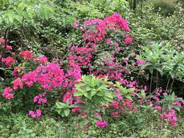
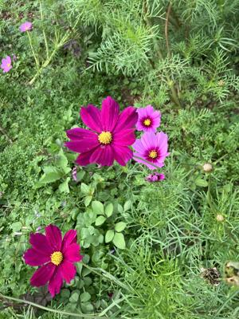

うるがいの話 ある日
最新: ボケている【うるがいの話 ある日】とは 一日だけのプログです
『うるがいの話』の最新一日だけのプログで、通信料が少なく経済的だ。カニの画像をクリックすると全ての日付が載る『うるがいの話』サイトを表示します
|
|
【うるがいの話】 うるがい(ｳﾙｶﾞｲ urugai)とは、『もずくがに』の名前でとても大きくなります。 |
|---|---|
|
|
【カミマヤーの話】 猫のことを方言でマヤーといいます。カミマヤー（kamimayaa）とは、神の猫のことです。 |
|
【たながぁの音楽】 たながぁ（ﾀﾅｶﾞｰ tanagaa）とは手長えびのことで、何種類かあり大きいのは車 エビぐらいになります。 |

|
【ぶながぁの話】 ぶながぁ(ﾌﾞﾅｶﾞｰ bunagaa)とは、赤い髪の毛、赤い身体、そして身長は１ｍ２０ｃｍ ぐらい、川の蟹を食べているの目撃された。場所は沖縄県国頭郡大宜味村のと ある村僕の隣近所に住んでいる爺さんから、聞いた話です。 |
|
|
【ギーマの話】 ギーマ(giima)とは、山原の里山に咲くスズランに似た、 花を付けます。実は食べられます、 気が付くと口の周りが紫になっています。 |
2025年04月07日 (月）ボケている
16:14
沖縄にいるコドモに２千円で、空港へ車で迎えにきてもらって、『
２２時２０分無事家に戻った』と、台湾にいる子供にラインでメッ
セージを送る。二日分の溜まった新聞をとる。体重計をみると、い
つもより１キロほど低い。その原因はのちほど、寝たのは午前を過
ぎた。
昼過ぎに、予約した本を取りに私立図書館へいく、提出したカード
が県立図書館のカードだった。そして旅行で着た上着を、クリーニ
ングへ持っていく。その前にエディカードにチャージしなければと
、一万円をチャージしたつもりが、お釣り９千円が出てきた。うん
？、チャージ金額を千円と選択したらしい。なんかボケている。
初日の昼食、しゃぶしゃぶで相席になった夫婦、旦那さんは７２歳
、宮崎県からの参加（旅行の前日に那覇に宿泊、解散する前にいつ
帰るのですかと尋ねると、明日の昼の１６時に宮崎県に帰るとのこ
と）、旅行へ行くのは若いときがいいですねと言い合ったが、傍（
はた）からみても、ひどく疲れていた。６月にスイスのマッターホ
ルンに行くと言っていた。解散するときに、わざわざお世話になり
ましたと挨拶してくれた（ヨボヨボの姿で）。
今日は、まだ少し肌寒いがいい天気だ。台湾のなにか、よどんだ空
気とは違い爽快さがある。
ブーゲンビリアの花

コスモスの花
